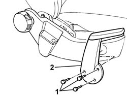

7045A56 LEVER controlling DRIVER'S seat height adjustment device - R.R .
- Path
- Procedures > 70 FITTINGS > 7045 FRONT SEATS > 7045A front seat assembly > 7045A56 LEVER controlling DRIVER'S seat height adjustment device - R.R .
- Kind
- repair procedure (removal / refitting; the operation number is the code)
- Applies to
- all engines; all production periods
- Interactive page
- https://sloeber94.github.io/elrnDB-fPnd/en/#/2753241
Applies to: all engines; all production periods
 Removing
Removing
 Refitting
Refitting1. Undo the retaining bolts.
2. Remove the driver's seat manual height adjustment device.

Applies to: all engines; all production periods
Refitting
RemovingFit the front seat manual height adjustment device lever and tighten the fixing bolts.
Topics that link to this page (4)
- 7045A20 SQUAB COMPLETE with a front seat with air-bag, height adjustment and lumbar adjustment, left or right - R.R.
- 7045A36 drivers seat manual height adjustment device - r r
- 7045A37 INTERNAL COVER for front seat with height adjustment, left or right - R.R .
- 7065A15 Anchorage ROD of a front seat belt on a seat with height adjustment, left or right - R.R .